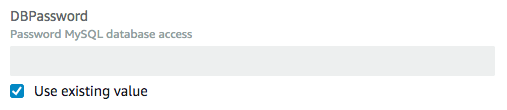

Le traduzioni sono generate tramite traduzione automatica. In caso di conflitto tra il contenuto di una traduzione e la versione originale in Inglese, quest'ultima prevarrà.
Aggiornamento diretto di stack
Quando desideri distribuire rapidamente gli aggiornamenti per il tuo stack, esegui un aggiornamento diretto. Con un aggiornamento diretto, invii un modello o dei parametri di input che specificano gli aggiornamenti alle risorse nello stack e li distribuisci AWS CloudFormation immediatamente. Se desideri utilizzare un modello per effettuare gli aggiornamenti, puoi modificare il modello corrente e archiviarlo localmente o in un Amazon S3 bucket.
Per le proprietà di risorsa che non supportano gli aggiornamenti, devi mantenere i valori correnti. Per visualizzare in anteprima le modifiche che AWS CloudFormation verranno apportate al tuo stack prima di aggiornarlo, usa i set di modifiche. Per ulteriori informazioni, consulta Aggiornamento di stack utilizzando i set di modifiche.
Nota
Durante l'aggiornamento di uno stack, AWS CloudFormation potrebbe interrompere le risorse o sostituire le risorse aggiornate, a seconda delle proprietà aggiornate. Per ulteriori informazioni sui comportamenti di aggiornamento delle risorse, consulta Aggiornamento dei comportamenti delle risorse stack.
Per aggiornare uno AWS CloudFormation stack (console)
-
Accedere AWS Management Console e aprire la AWS CloudFormation console all'indirizzo https://console.aws.amazon.com/cloudformation
. -
Nella consoleAWS CloudFormation
, dall'elenco di stack, selezionare lo stack in esecuzione da aggiornare. -
Nel riquadro dettagli dello stack, scegliere Update (Aggiorna).
-
Se non è stato modificato il modello di stack, selezionare Use current template (Utilizza modello corrente), quindi selezionare Next (Avanti).
Se è stato modificato il modello, selezionare Replace current template (Sostituisci modello corrente) e specificare la posizione del modello aggiornato nella sezione Specify template (Specificare modello):
-
Per un modello memorizzato localmente nel computer, selezionare Upload a template file (Carica un file modello). Selezionare Choose File (Scegli file) per accedere al file e selezionarlo, quindi selezionare Next (Avanti).
Nota
Se carichi un file modello locale, lo AWS CloudFormation carica in un bucket Amazon Simple Storage Service (Amazon S3) nel tuo account. AWS Se non si dispone già di un bucket S3 creato da AWS CloudFormation, questo crea un bucket univoco per ciascuna Regione in cui è possibile caricare un file di modello. Se hai già un bucket S3 creato da AWS CloudFormation nel tuo AWS account, AWS CloudFormation aggiunge il modello a quel bucket.
Considerazioni da tenere a mente sui bucket S3 creati da AWS CloudFormation
-
I bucket sono accessibili a tutti gli utenti dotati di autorizzazioni Amazon S3 nell'account AWS .
-
AWS CloudFormation crea i bucket con la crittografia lato server abilitata per impostazione predefinita, crittografando così tutti gli oggetti memorizzati nel bucket.
Puoi gestire direttamente le opzioni di crittografia per i bucket che hai AWS CloudFormation creato; ad esempio, utilizzando la console Amazon S3 all'
indirizzo https://console.aws.amazon.com/s3/ o il. AWS CLIPer ulteriori informazioni, consulta Crittografia predefinita Amazon S3 per i bucket S3 nella Guida per l'utente di Amazon Simple Storage Service. -
Puoi utilizzare il tuo bucket e gestirne le autorizzazioni caricando manualmente i modelli su Amazon S3. Quando crei o aggiorni uno stack, specifica l'URL Amazon S3 di un file del modello.
-
-
Per un modello archiviato in un bucket Amazon S3, selezionare URL Amazon S3. Inserire o incollare l'URL per il modello, quindi selezionare Next (Avanti).
Se disponi di un modello in un bucket con la funzione Versioni multiple abilitata, puoi indicare una versione specifica di modello, ad esempio
https://s3.amazonaws.com/templates/myTemplate.template?versionId=123ab1cdeKdOW5IH4GAcYbEngcpTJTDW. Per ulteriori informazioni, consulta Utilizzo di oggetti in un bucket che supporta la funzione Controllo delle versioni nella Guida per l'utente di Amazon Simple Storage Service.
-
-
Se il modello contiene parametri, nella pagina Specify stack details (Specifica dettagli stack) immettere o modificare i valori di parametro, quindi selezionare Next (Avanti).
AWS CloudFormation popola ogni parametro con il valore attualmente impostato nello stack ad eccezione dei parametri dichiarati con l'
NoEchoattributo; tuttavia, puoi comunque utilizzare i valori correnti selezionando Usa il valore esistente.Per ulteriori informazioni sull'utilizzo di
NoEchoper mascherare le informazioni sensibili e sull'utilizzo dei parametri dinamici per gestire i segreti, consulta la best practice Non incorporare le credenziali nei modelli. -
Nella pagina Configure stack options (Configura opzioni stack), puoi aggiornare i tag e le autorizzazioni applicati allo stack, e modificare le opzioni avanzate quali la policy dello stack, la configurazione di rollback o l'aggiornamento nell'argomento di notifica Amazon SNS.
Per ulteriori informazioni su queste opzioni, consulta Impostazione di opzioni di stack AWS CloudFormation.
Seleziona Avanti.
-
Esaminare le informazioni stack e le modifiche inviate.
Verificare di aver inviato le informazioni corrette, come i valori dei parametri o l'URL del modello corretti. Se il modello contiene risorse IAM, selezionareI acknowledge that this template may create IAM resources (Acconsento che questo modello possa creare risorse IAM) per specificare che si desidera utilizzare risorse IAM nel modello. Per ulteriori informazioni sull'utilizzo delle risorse IAM nei modelli, consulta Controllo dell'accesso con AWS Identity and Access Management.
Nella sezione Anteprima del set di modifiche, verifica che AWS CloudFormation vengano apportate tutte le modifiche che ti aspetti. Ad esempio, puoi verificare che AWS CloudFormation aggiunga, rimuova e modifichi le risorse che intendevi aggiungere, rimuovere o modificare. AWS CloudFormation genera questa anteprima creando un set di modifiche per lo stack. Per ulteriori informazioni, consulta Aggiornamento di stack utilizzando i set di modifiche.
-
Una volta completate le modifiche, seleziona Update stack (Aggiorna stack).
Nota
A questo punto, è possibile visualizzare il set di modifiche per rivedere gli aggiornamenti proposti più accuratamente. A tale scopo, scegliete Visualizza set di modifiche anziché Aggiorna stack. CloudFormation visualizza il set di modifiche generato in base agli aggiornamenti. Quando si è pronti per eseguire l'aggiornamento dello stack, selezionare Execute (Esegui).
CloudFormation visualizza la pagina dei dettagli dello stack per lo stack, con il riquadro Eventi selezionato. Ora lo stack è in uno stato UPDATE_IN_PROGRESS. Dopo aver CloudFormation completato con successo l'aggiornamento dello stack, imposta lo stato dello stack su UPDATE_COMPLETE.
Se l'aggiornamento dello stack fallisce, CloudFormation ripristina automaticamente le modifiche e imposta lo stato dello stack su UPDATE_ROLLBACK_COMPLETE.
Nota
Puoi annullare un aggiornamento mentre si trova nello stato UPDATE_IN_PROGRESS. Per ulteriori informazioni, consulta Annullamento di un aggiornamento dello stack.
Per AWS CloudFormation aggiornareAWS CLIuno stack ()
-
Utilizzare il comando
aws cloudformation update-stackper aggiornare direttamente uno stack. È possibile specificare lo stack e i valori e le funzionalità dei parametri che si desidera aggiornare; inoltre, se si sceglie di utilizzare un modello aggiornato, è possibile specificare il nome del modello.L'esempio seguente mostra l'aggiornamento del modello e dei parametri di input per lo stack
mystack:$aws cloudformation update-stack --stack-namemystack\ --template-url https://s3.amazonaws.com/sample/updated.template \ --parameters ParameterKey=VPCID,ParameterValue=SampleVPCID ParameterKey=SubnetIDs,ParameterValue=SampleSubnetID1\\,SampleSubnetID2L'esempio seguente mostra l'aggiornamento solo dei valori del parametro
SubnetIDsper lo stackmystack:$aws cloudformation update-stack --stack-namemystack\ --use-previous-template \ --parameters ParameterKey=VPCID,UsePreviousValue=true ParameterKey=SubnetIDs,ParameterValue=SampleSubnetID1\\,UpdatedSampleSubnetID2L'esempio seguente mostra l'aggiunta di due argomenti di notifica per stack allo stack
mystack:$aws cloudformation update-stack --stack-namemystack\ --use-previous-template --notification-arns \ "arn:aws:sns:us-east-1:12345678912:mytopic" "arn:aws:sns:us-east-1:12345678912:mytopic2"L'esempio seguente mostra la rimozione di tutti gli argomenti di notifica per stack dallo stack
mystack:$aws cloudformation update-stack --stack-namemystack\ --use-previous-template --notification-arns []